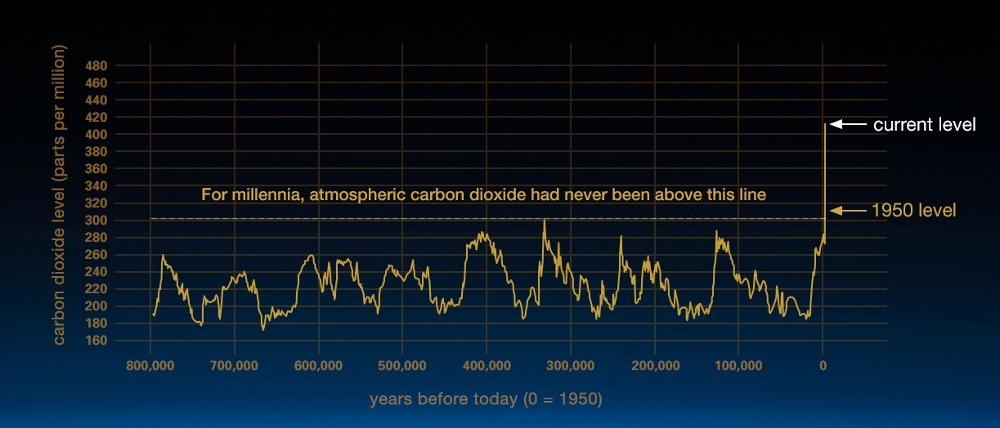
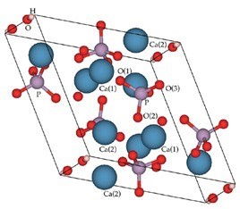

CARBON EMMISIONS
The growth of anthropogenic CO2 has become a global concern, with serious environmental impacts. The average amount of CO2 has always fluctuated, but has reached a new high with the onset of the industrial age, 1950.
CARBON CAPTURE
To reduce the effects of climate change, the International Panel on Climate Change, IPCC, has set a goal of keeping the global temperature below 1.5 ⁰C below the average temperature of the pre-industrial age by the year 2050. While using alternative fuels and green chemistry put out less CO2 and would help to achieve this goal, it is unlikely that society will be able to depart from the use of fossil fuels entirely. This is because alternative fuels are not as cost effective. The remaining solution is putting more research efforts into the use of carbon capture storage and utilisation, CCS and CCU.
HYDROXYAPATITE
Hydroxyapatite is a mineral that makes up bone composition. It is cheap and easy to make synthetically. It has the ability to readily uptake carbonate, making it a candidate for use in carbon capture. Hydroxyapatite can also be used to make fertilizer. Hence, perfect for CCU to recyle CO2.
